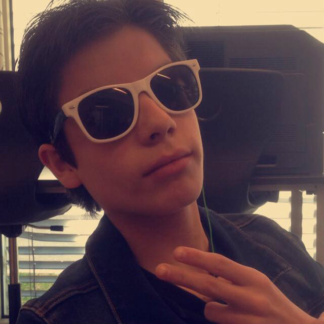

Tobias Orellana "Toby" Mellado (born May 2, 2001) is a Norwegian actor and a musical wannabe. He is a member of the Norwegian drama group Opprop tveten.
Mellado was born in Oslo, Norway as Tobias Orellana Mellado but later referred himself as Toby Mellado. His mother, Blanca Orellana, is an kindergarten assistant, and his father, Pietro Mellado, is a swimmer instructor. He has one brother, Lucas, and three sisters, Michelle, Amelia and Aurora. His family was originally from Chile and there were a lot of traveling for some in the family, but Mellado has described that he did not travel there so very much because of reasons. Mellado discovered acting in kindergarten where he always used to dress up and pretend to be "someone else". He was obsessed with the fun and the happiness that he decided to join an acting class in ?. He eventually decided to give that up to try a new music career, but unfortunately that did not end well for him, so he decided to join the group Opprop tveten and is doing well to this day.